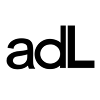
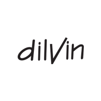

Yurt içi
Çalıştığımız Markalar
Yurt içinde Koton, Oxxo, Adil Işık ve Dilvin gibi moda öncüsü markalarla çalışıyoruz.




Yurt içinde Koton, Oxxo, Adil Işık ve Dilvin gibi moda öncüsü markalarla çalışıyoruz.


İhracat tarafında NafNaf, More&More, Etam, LPP, Anthropologie ve Dunnes Store gibi global markalara üretim yapmaktayız.


İtalya, İspanya, İngiltere, Almanya, Portekiz, Fas, Polonya, Macaristan ve Fransa ile yürüttüğümüz ticaret ilişkileriyle uluslararası alanda güvenilir bir üretici kimliği kazandık.